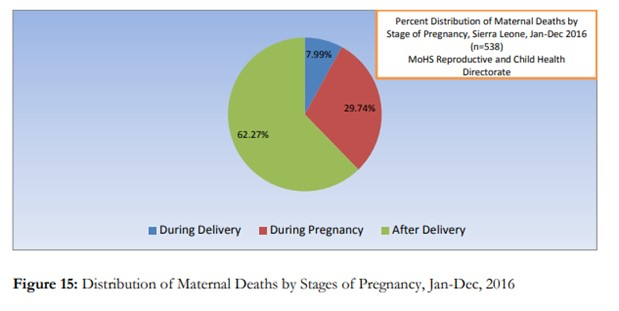

Approximately 830 women die during pregnancy and childbirth every day due to some causes that can be prevented!
The risk of the mother of developing country dying in the pregnancy-related causes is approximately 36 times compared to the woman of the developed country.
Let's take Sierra Leone as an example :

- poverty country
- high Maternal Mortality Ratio (MMR) of 1,165 deaths per 100,000 live births 
From the pie chart above, it is shown that maternal mortality during pregnancy and after delivery occupies a large proportion in Sierra Leone.
Long Distance to the Hospital is the PROBLEM.
Most rural villages are only accessible by off-road vehicles or motorbikes due to the poor road conditions, especially in the rainy season. The distance to the hospital as well as lack of accessible and affordable vehicles were significant barriers when attempting to go to the hospital to deliver.
Many women were reluctant to walk so far; did not want to walk alone; and were fearful of giving birth along the bush road, a situation that many had already experienced.
One woman shared her experience of trying to get to the hospital along the bush road:
“(…) as soon as I felt the labour pain I decided to go to the hospital to deliver there. But since I started
to give birth, I have never been to the hospital yet, although I have (had) the plan to go there. I have given birth to
3 children along the bush road when I was going to Masanga Hospital.” (IDI 22)